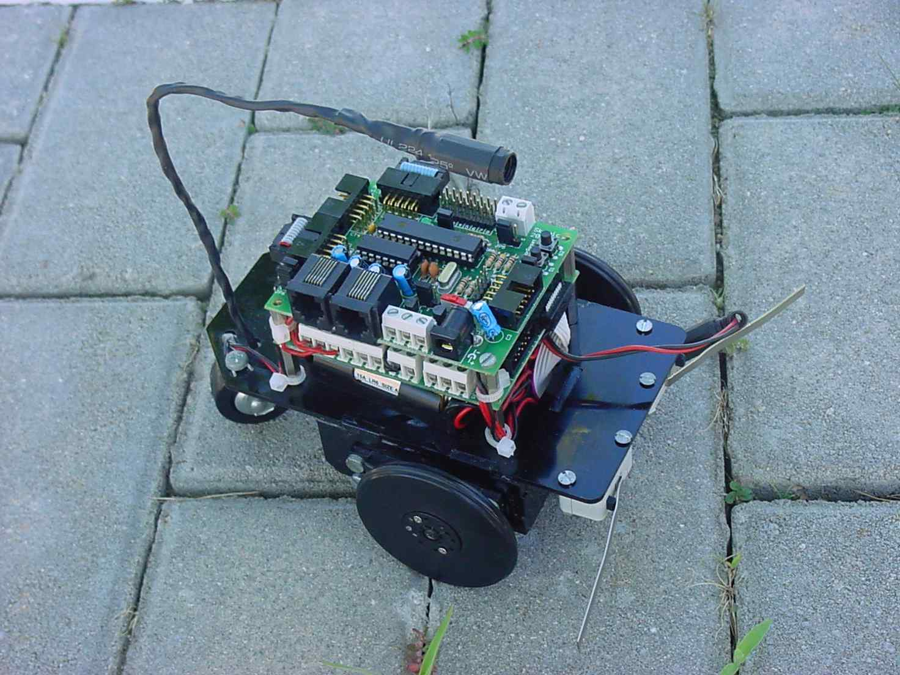
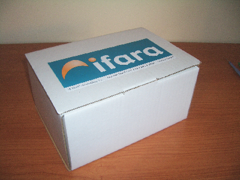
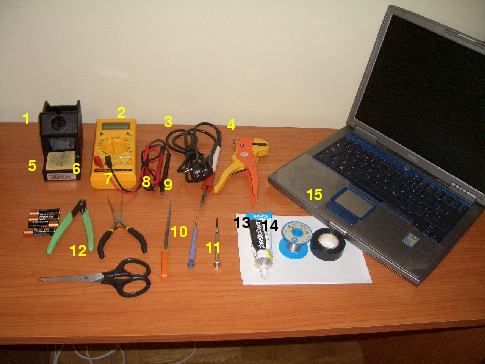

|
Taller de Robótica Básico - Skybot V1.4. |
|
 |
Taller de iniciación a la robótica. Está pensado para todos aquellos que les gusta la robótica y quieren construirse su propio robot. No son necesarios ningún tipo de conocimientos previos. El taller será eminentemente práctico y habrá que soldar, trucar servos, montar la estructura, programar en C... Se construirá un robot Skybot partiendo desde cero.
El taller lo encontrarán especialmente útil los estudiantes de carreras técnicas como informática, telecomunicaciones o industriales, donde verán cómo se aplican los conocimientos teóricos que les enseñan.
Todas las personas que hayan adquirido un Skybot y no estén apuntadas a un taller, es decir que se lo van a construir por su cuenta, encontrarán en estas páginas la información necesaria para hacerlo. Recomendamos ir sesión por sesión leyendo detenidamente para no dejarnos detalle.
El robot que se construirá en el taller es el Skybot v1.4., comercializado por la empresa Ifara Tecnologías. Es un robot sencillo,económico, didáctico y abierto. Permite que todos aquellos que tengan interés por la robótica puedan iniciarse en ella de una manera rápida y sencilla.
Se trata de un robot abierto: los planos de la estructura mecánica, los esquemas hardware y el código fuente de los programas están disponibles. Cualquiera puede construirse el robot o estudiar con más detalle cualquiera de sus partes. Así, además, queda garantizada su perdurabilidad en el tiempo, estando al margen de decisiones comerciales, y permite a todos aquellos que no puedan adquirirlo,otra alternativa para tenerlo.
El Skybot ha sido diseñado por Andrés Prieto-Moreno, de Ifara Tecnologías.
Sesión 1 : Comenzar la construcción de la estructura y trucar los servos
Sesión 2 : Finalizar la estructura, conectar todos los sensores y probar el robot
Sesión 3: Instalación del software. Programa “hola mundo”. Programación del robot con la libreria skybot
Sesion 4: Programación avanzada
Sesión 5: El concurso del Mogollón.
|
 |
|
Material adicional (no incluido en el kit del robot) que se va a necesitar para el taller:
|
 |
1) Soporte para soldador 2) Polímetro (opcional) 3) Soldador de punta fina (11W) 4) Pelacables (opcional) 5) 4 pilas tamaño AA 6) Alicates para cortar 7) Alicates de cabeza plana 8) Lima 9) Destornillador pequeño de cabeza plana 10) Destornillador pequeño de cabeza en estrella 11) Pegamento para plásticos rígidos (por ejemplo PlasticCeys) 12) Tijeras 13) Rollo de estaño de 1mm 14) Rollo ce cinta aislante negro 15) Ordenador con puerto serie |
Al finalizar el taller, todos los grupos tendrán funcionando su primer robot y con él podrán empezar a profundizar en los temas que más les interesen: electrónica, programación, mecánica... Una vez que se ha construido el primer robot, se tienen los conocimientos prácticos necesarios para empezar a modificarlo y personalizarlo.
|
|
Link a diferentes talleres de robótica realizados con anterioridad
Extracto del cuaderno de bitácora del taller de la Campus Party 2005
Servomecanismos Futaba 3003